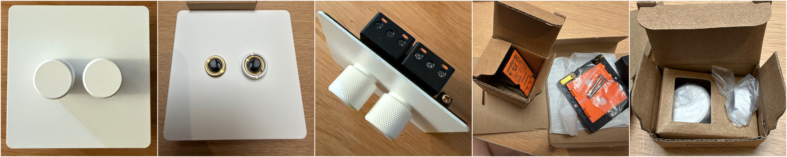
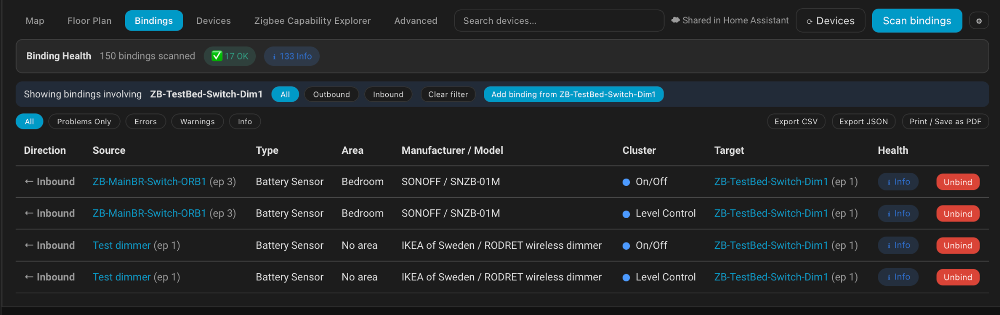
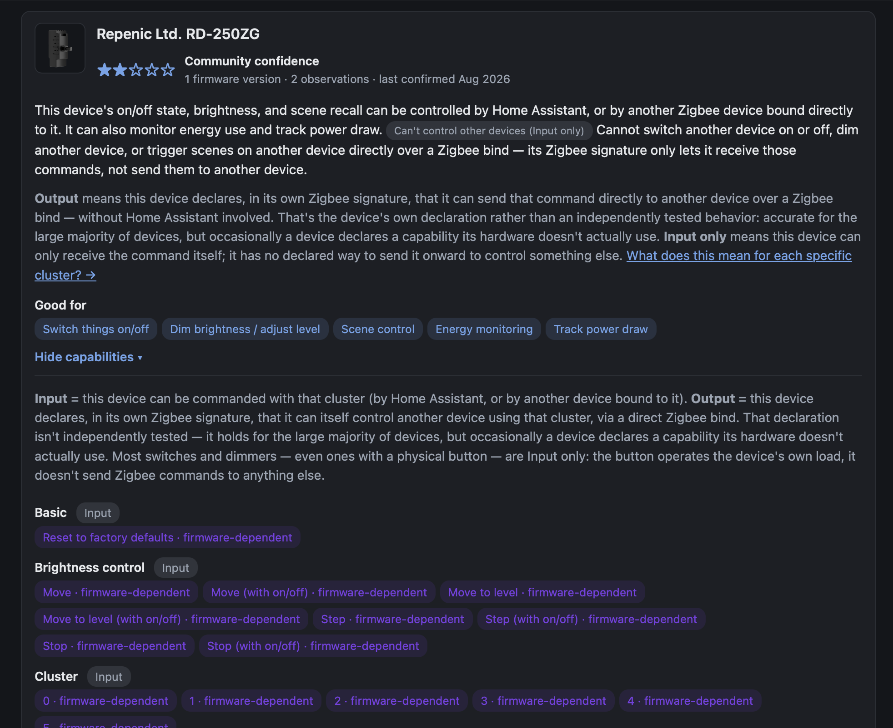
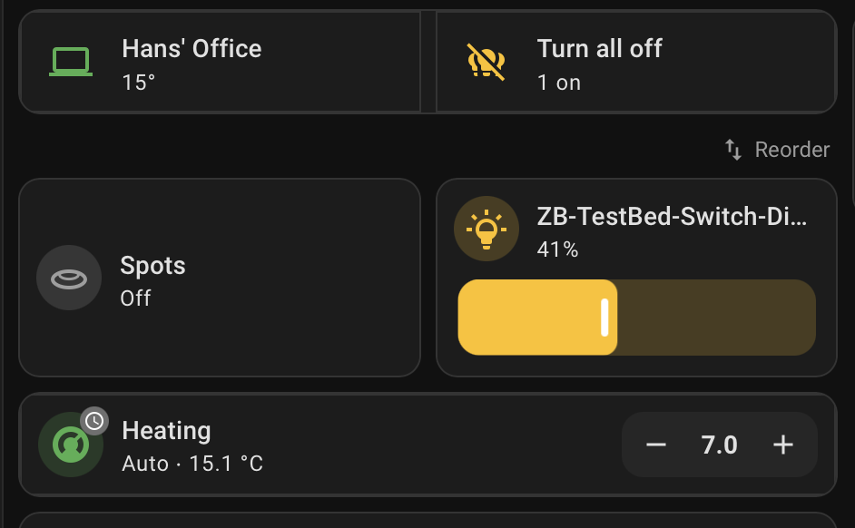
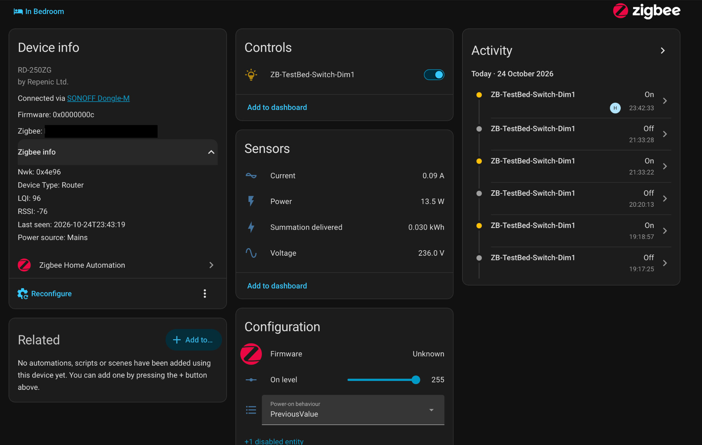

Reviews · Zigbee dimmer
Repenic RD-250ZG Zigbee Smart Dimmer: hands-on ZHA review, direct bindings and energy monitoring
First published on the Home Assistant community forum. Questions and comments are welcome there.
TL;DR
The Repenic RD-250ZG is the nicest-looking and best-feeling dimmer I've tested, Zigbee or otherwise. It's expensive (£119 for the two-gang version tested, £79 for single-gang), but the premium design, excellent rotary controls and solid ZHA integration make it a compelling product.
What impressed me:
- Beautiful minimalist design, excellent tactile controls and smooth LED dimming.
- No neutral required, straightforward installation and replaceable dimmer modules.
- Native ZHA support without custom quirks.
- Direct On/Off and dimming bindings from both the IKEA RODRET and Sonoff Orb remain functional with Home Assistant and the Zigbee coordinator offline, including when both are unavailable.
- Reliable state synchronisation, configurable power restoration and working energy monitoring.
- Identified as a Zigbee Router, with mesh connectivity visible in ZHA.
The biggest disappointment: No outbound direct Zigbee binding. It can be controlled by other Zigbee devices, but its rotary controls cannot directly operate lights elsewhere on the Zigbee network.
Verdict: Expensive, but I'd buy more. If Repenic added outbound binding, it would be very close to my ideal Zigbee dimmer.
I've been testing the Repenic RD-250ZG, specifically the two-gang matt-white model, with Home Assistant and ZHA. I wanted to examine not just whether it pairs and dims, but what its Zigbee capabilities really are, how it behaves during failures, and how well it works with other devices.
This test also brought together three projects I've been working on:
- ZHA Bindings Manager, for visualising, creating and inspecting direct Zigbee bindings.
- Zigbee Capabilities Database, which records what devices actually expose, including input/output clusters and binding direction.
- Lighting Manager, which helps organise devices into rooms and surface them in my Home Assistant lighting dashboard.
My first impression? It's the nicest dimmer I've seen, whether Zigbee or conventional. The technical results are mostly very good too, although I found one limitation that would stop me using it in some installations.
1. Product and installation
Tested unit: Repenic RD-250ZG, two-gang, matt white with white knobs. The manufacturer's listed prices at the time of review were £119 for two-gang and £79 for single-gang. Product page.

The faceplate is stainless steel with a beautiful matt-white finish. The slim, understated design is what first caught my eye, with no indicator lights or unnecessary decoration. The rotary controls turn smoothly, with a subtle, tactile click-like feel that makes fine adjustment easy. Pressing a knob to switch the light on or off has a satisfying, positive action. It really does look and feel like a premium product.
I installed the switch myself. No neutral wire was required, it fitted my back box without difficulty (Repenic specifies a minimum depth of 25mm), and the supplied instructions were exceptionally clear. ZHA pairing was straightforward: press the knob twice, holding the second press for three seconds, as described in the manual.
The two-gang version arrived with its individual RD-250ZG modules separate from the common faceplate, so I assembled them. This was easy. The modular approach is more than cosmetic: Repenic sells replacement smart dimmer modules separately (listed at £41), meaning an individual module can be replaced without repurchasing the entire two-gang assembly.
2. At a glance: verified findings
The following reflects what I actually tested, rather than a reproduction of the specification sheet.
| Area | Finding | Status |
|---|---|---|
| ZHA pairing | Recognised natively, without a custom quirk | Passed |
| Physical controls | Immediate on/off response; smooth, precise rotary dimming | Passed |
| Lighting loads | Conventional 40W bulb and dimmable LED both worked | Passed |
| Minimum brightness | Stable, no visible flicker in tested setup | Passed |
| Inbound direct binding | On/Off and Level Control from IKEA RODRET | Passed |
| Multiple controllers | RODRET and Sonoff SNZB-01M Orb both control the dimmer | Passed |
| Home Assistant stopped | Both RODRET and Sonoff Orb retained full direct-bound On/Off and dimming control. | Passed |
| Coordinator offline | Both wireless controllers continued switching and dimming, including with HA also unavailable. | Passed |
| ZHA state feedback | On/off and brightness track both physical and bound control | Passed |
| Power interruption | Bindings retained; configurable restoration settings worked | Passed |
| On Level | 255 restores last brightness; lower values set switch-on level | Passed |
| Electrical monitoring | Voltage, current, power and cumulative energy update | Passed |
| Zigbee routing | ZHA identifies device as Router; network-map links visible | Confirmed classification |
| Relaying another device's traffic | Not independently demonstrated | Not tested |
| Outbound direct binding | No outbound On/Off or Level Control support in my scan | Not supported in scan |
Environment: ZHA using a SONOFF Dongle-M coordinator; Repenic model RD-250ZG, firmware 0x0000000c, no custom ZHA quirk.
3. Direct Zigbee binding: two controllers, one dimmer
This is where my ZHA Bindings Manager proved particularly useful.
I first bound an IKEA RODRET wireless dimmer to the Repenic using On/Off (0x0006) and Level Control (0x0008). Both worked immediately. I could switch the hardwired light on/off and adjust brightness smoothly using the RODRET, without any Home Assistant automation or YAML.
Next, I used the same graphical tool to add a Sonoff SNZB-01M Orb, again binding On/Off and Level Control. It worked too. The Repenic now responds independently to its own knob, the RODRET and the Orb.

| Source controller | Endpoint | Directly bound clusters | Target |
|---|---|---|---|
| IKEA RODRET | 1 | On/Off, Level Control | Repenic endpoint 1 |
| Sonoff SNZB-01M Orb | 3 | On/Off, Level Control | Repenic endpoint 1 |
To verify that this was genuinely device-to-device control, I tested both wireless controllers with Home Assistant stopped and with the Zigbee coordinator offline, including when both were unavailable simultaneously. In every case, the IKEA RODRET and Sonoff Orb continued switching and dimming the Repenic normally. This is more than the hardwired rotary knob continuing to work: both remote controllers retained their full On/Off and Level Control functionality without HA automations or a running coordinator. The Zigbee devices still need a viable wireless communication path, but crucially, they don't depend on Wi-Fi, Home Assistant or the Zigbee coordinator being operational. This means you can still use your wireless switches to control the lights even if your Wi-Fi goes down or your entire Home Assistant system is unavailable.
4. What my Zigbee capabilities scan revealed
I scanned the RD-250ZG using the capability-exploration functions in my Bindings Manager and submitted its results to my Zigbee Capabilities Database.

The important distinction is inbound versus outbound binding:
| Capability | RD-250ZG result |
|---|---|
| Receive On/Off through a direct binding | Yes, tested |
| Receive Level Control through a direct binding | Yes, tested |
| Send outbound On/Off commands through direct binding | Not supported in scan |
| Send outbound Level Control commands through direct binding | Not supported in scan |
This is my biggest criticism of the device. It can be controlled directly by other Zigbee devices, but its beautiful rotary controls cannot themselves be bound to control a separate Zigbee load elsewhere. That matters if I want the Repenic's appearance at the wall while controlling a remotely wired light, or if I want one rotary control to operate multiple circuits without depending on Home Assistant.
To be clear, wireless multi-way control of the Repenic's own hardwired light works very well, as the RODRET and Orb tests show. Repenic also offers a separate, compatible wired multi-way dimming arrangement. Neither is the same as outbound Zigbee binding from the RD-250ZG. Repenic's rocker range advertises remote-control / Find & Bind capabilities, which I'd like to test separately.
5. Smooth dimming and synchronisation with Home Assistant
The rotary dial allows small changes very precisely, and I found the dimming smooth and stable right down to the lowest brightness during my tests. Both the conventional 40W bulb and a dimmable LED worked well. I haven't done an exhaustive LED compatibility test across different bulbs or drivers.
The Repenic also reports its state properly. Adjusting brightness from the Repenic knob or either directly bound remote updates the brightness in Home Assistant; switching on/off updates the on/off state. Commands from the HA dashboard work too, and the physical and direct-bound controllers continue functioning afterwards.
I used Lighting Manager to assign the device to my office. It then appeared automatically in my Home Assistant lighting dashboard, including a brightness slider.

For me, that makes a neat end-to-end demonstration: Capabilities Database to establish what the device supports, Bindings Manager to wire up device-to-device behaviour, and Lighting Manager to organise it in HA.
6. Configurable switch-on and mains-restoration behaviour
ZHA exposes two useful but different settings which I tested.
On Level controls brightness on a normal switch-on:
| Setting | Observed result |
|---|---|
| 255 | Restores the previous brightness |
| Below 255 | Switches on at the configured level, irrespective of last brightness |
The configured On Level is not a brightness cap. You can still turn the light up beyond that level using the knob or wireless remote.
Power-on behaviour controls what happens when mains power returns. All four settings worked as configured: Off, On, Toggle and PreviousValue. The direct Zigbee binding also survived a mains interruption and still worked once power was restored.
Configuration controls are also visible in the device page screenshot below.
7. Electrical measurements: all four sensors work
ZHA creates voltage, current, instantaneous power and cumulative energy entities for the RD-250ZG. I tested them with the light on and off, including at different brightness levels.
| Measurement | Observed behaviour |
|---|---|
| Voltage | Values around 231–236V |
| Current | 0.00A with light off, increasing when on |
| Instantaneous power | 0W off; approximately 17.5W at lower brightness and 30.3W at higher brightness |
| Cumulative energy | Confirmed to accumulate and update in Home Assistant |
The increasing power reading as I turned up the brightness is particularly useful evidence that these are functioning load measurements, not merely exposed but inactive Zigbee entities.

8. Zigbee Router: what I could verify
Despite not requiring a neutral wire, ZHA identifies the RD-250ZG as a Router, and it appears as a router in the ZHA network map, with multiple mesh links.
Router identification is also visible in the device page screenshot above.
That's enough to confirm its router classification and participation in the mesh topology. The map alone doesn't prove another device has actually forwarded packets through it, and I haven't separately captured a parent-child relationship or traffic trace demonstrating that. I wouldn't describe throughput or routing performance on the evidence gathered so far.
9. What I'd improve
- Outbound direct Zigbee binding. This is the main omission for me. I'd love the rotary controls to be usable as independent Zigbee controllers for remote loads, alongside their existing hardwired function.
- A neater multi-gang live link. The modules can of course share the same incoming live supply, using a properly installed short link between their live terminals; I'm not suggesting they need separate incoming live feeds. I'd simply have appreciated a suitable manufacturer-supplied bridge or linking accessory, rather than making up the connection myself. It would be a small convenience improvement, not a fundamental wiring problem.
- Price. The two-gang version costs £119. It's expensive even given how attractive and well made it is.
10. Verdict
Overall, I'm very impressed. The design and tactile quality are exceptional, and the technical side stands up well to scrutiny: native ZHA support, smooth dimming, accurate state feedback, functional electrical monitoring and reliable inbound direct binding from multiple controllers.
The lack of outbound direct binding is genuinely frustrating, particularly given how much I'd like to use these controls in more complex Zigbee lighting arrangements. Still, for a circuit actually wired to the dimmer, there's a great deal to like.
Would I buy more at this price? Yes. Not because it's good value in an absolute sense, but because I'd be happy to pay for this particular combination of design, feel and functionality.
If others have used this model with ZHA, or experimented with Repenic's rockers and outbound binding, I'd be very interested to compare notes, in the forum thread or at lab@solgaard.uk.